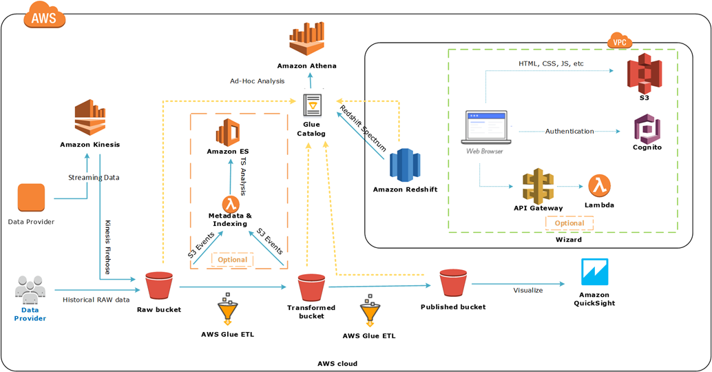
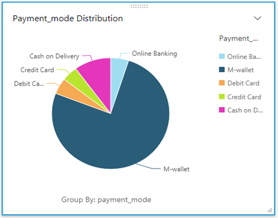
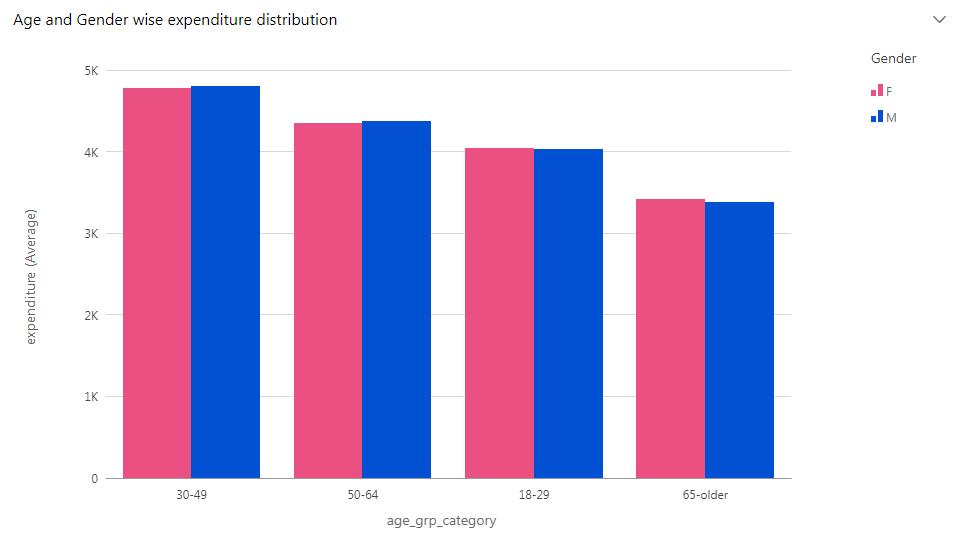
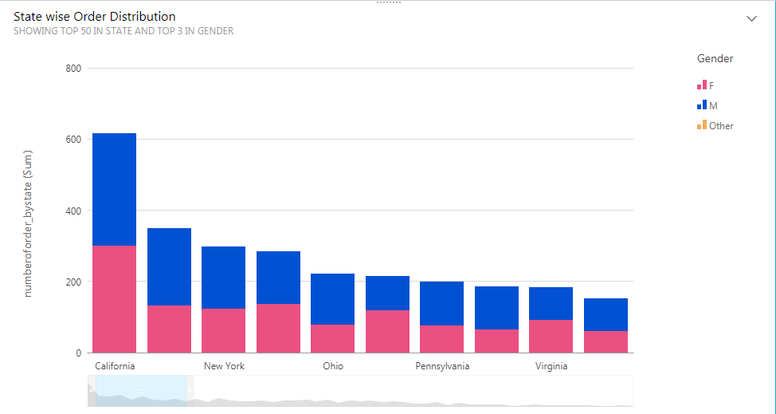

Data Lake
Quick Start Walk Through Guide
This wizard will guide you through a Data Lake reference architecture and AWS services used within.
Step 1:
Get Started
Yash Data lake Walk through guide is build to assist you through the Server less Data Lake reference architecture and the AWS services used within.
To demonstrate the flow in AWS Account, We are going to use a sample dataset of the Ecommerce company that sell its products at XYZ.com.
E-commerce is growing rapidly, but with the huge market acting as a magnet to brands large and small, competition is ramping up faster than the total growth of the market. This means customers are harder to win, easier to lose and fussier on price and user experience. To avoid falling behind the ever more fierce competition, you need to both be aware of and benefit from the latest trends in e-commerce.
Thus e-commerce insights like Customer segmentation (which is referred as the process of using customer data to enable a clustering of customers with shared attributes) which can be used to communicate different things to different groups and Lifetime value of the customer can help business user to understand the trend.
Yash Data Lake in AWS provides data ingestion, real-time analytics over continuous stream of data, batch analytics using the data available in the Data Lake, ad-hoc analytics for exploring different data insights and visualisation, which can be easily understood by key stakeholders.
The architecture diagram given below provides a high-level overview of Yash Data Lake in AWS. All of the AWS resources illustrated below were deployed to your account when you launched the Yash Data lake. As we step through this guide, sample data from E-commerce will be ingested into your account using cloud formation. After this demonstration, you can remove the data and start using Yash Data lake architecture with your own data.

Step 2:
Discover RAW Datasets
Yash Data Lake leverage Amazon S3, Amazon Glue, Amazon Redshift for data management and transformation of the data provided by the Customer.
AWS Glue is a fully managed extract, transform, and load (ETL) service. Glue crawlers can scan data lake and keep the Glue Data Catalog in sync with the underlying data.
Principles of Data Organisation within Yash Data lake
Raw datasets are stored to the Data Lake in their native format to keep the raw data intact. This enhance business users to transform dataset as per their needs and also the cost of entry remains low.
AWS Glue Crawler discovers Raw datasets and populates the metadata (e.g. table definition and schema) associated with it in the AWS Glue Data Catalog.
The AWS Glue database gets populated with four tables named Orders, Customers, Products & Demographics.
Review Dataset contributed by Data Provider
Review Dataset contributed by Data Provider
Crawler State {{crawlerState}}
Step 3:Create Transformed Datasets
Step 4: Streaming Data
Yash Data lake leverages Amazon Kinesis for streaming data ingestion, validation and analytics with real-time dashboards in the ElasticSearch service. a. Architecture for Streaming Data Submission This diagram illustrate how orders stream get ingested in the real-time by the kinesis firehose and stored in Redshift. Kinesis Analytics provides real-time analytics on orders data ,results of which are stored in ElasticSearch service that provides real-time dashboards on business relevant KPIs using Kibana b. Streaming Data Creation and Analytics 1. Creates two Kinesis Analytics applications: a) clean-order-app : This kinesis application will remove all the null values from the customerId column in Orders data. b) aggregate-orders-app : This app provides real-time analytics on orders data. 2. On the click of Start Order Data Stream button Order Data gets generated via Javascript which streams Orders data into Kinesis Firehose. Order Data Stream can be stopped using Stop Order Data Stream button. 3. Streamed Orders are: a)Cleaned and analyzed data results which are published to Elasticsearch Service. b)Persisted in S3 RAW Bucket. c)Validated and Loaded to Redshift (Via Glue ETL) c. Checking of Kinesis Analytics Application 1. Visit the Kinesis Analytics in AWS Management Console. 2. Check whether the application is running state if not wait for application to be in running state then proceed.
d. Observe Real-time Kibana Dashboards with results of Analytics 1. Data will be available in Elasticsearch after few minutes. 2. Visit Streaming Order Data analysis dashboards in kibana. 3. Observe real-time Dashboards including : Age Group Wise Revenue This dashboard shows total revenue for orders grouped by age groups computed in a sliding 1 minute window.
Top Selling Products This dashboard ranks the most popular product-Id computed in a sliding 1 minute window.
Yash Data lake leverages Amazon Kinesis for streaming data ingestion, validation and analytics with real-time dashboards in the ElasticSearch service. a. Architecture for Streaming Data Submission This diagram illustrate how orders stream get ingested in the real-time by the kinesis firehose and stored in Redshift. Kinesis Analytics provides real-time analytics on orders data ,results of which are stored in ElasticSearch service that provides real-time dashboards on business relevant KPIs using Kibana b. Streaming Data Creation and Analytics 1. Creates two Kinesis Analytics applications: a) clean-order-app : This kinesis application will remove all the null values from the customerId column in Orders data. b) aggregate-orders-app : This app provides real-time analytics on orders data. 2. On the click of Start Order Data Stream button Order Data gets generated via Javascript which streams Orders data into Kinesis Firehose. Order Data Stream can be stopped using Stop Order Data Stream button. 3. Streamed Orders are: a)Cleaned and analyzed data results which are published to Elasticsearch Service. b)Persisted in S3 RAW Bucket. c)Validated and Loaded to Redshift (Via Glue ETL) c. Checking of Kinesis Analytics Application 1. Visit the Kinesis Analytics in AWS Management Console. 2. Check whether the application is running state if not wait for application to be in running state then proceed.
d. Observe Real-time Kibana Dashboards with results of Analytics 1. Data will be available in Elasticsearch after few minutes. 2. Visit Streaming Order Data analysis dashboards in kibana. 3. Observe real-time Dashboards including : Age Group Wise Revenue This dashboard shows total revenue for orders grouped by age groups computed in a sliding 1 minute window.
Top Selling Products This dashboard ranks the most popular product-Id computed in a sliding 1 minute window.
Data generation has started. Click "Stop Order Data Stream" to stop data generation
{{appStarted}}
Step 5:Incremental data
Incremental load is defined as the activity of loading new or updated columns in the table. AWS Glue detects schema changes in the data and adapts it. Till now we were not having the e-mail address of the customers in the Customer data. Now we add the column in the customer table holding the email address of the customers. This is because email consistently out performs other marketing activities. Actually, email converts at nearly twice the normal in our experience – partly because they are regular and satisfied customers. Its certainly a lot cheaper than many of the activities retailers pursue. Email is a critical piece of the marketing puzzle for e-Commerce businesses that can increase e-Commerce Conversions by Using Customer Data 1. Using Past Online Purchases : Customers past behaviour is a good indicator of future behaviour. Past purchases inform you about the styles, brands, and products your customers are interested in. Sending the mail to the customer for the products based on customer interests can help in the increase of your business. 2. Products Viewed : Viewing a product, especially multiple times, indicates interest. But, this data often goes unused in e-Commerce email marketing. Ideal use of this data is like : 1. After someone views a product but does not purchase it, send an email containing a buying guide to educate the potential customer about the item and provide the tools to evaluate it. 2. If the customer clicks on the buying guide, send a follow-up email to suggest urgency; for instance, a notification of a sale or limited inventory. 3. Item left in Cart : Abandoned cart reminders probably are the most common way e-Commerce marketers use data to drive their email marketing programs. Limited inventory, a discount, and telling the customer you will remove the items from his cart soon are all ways to invoke sense of urgency.
Incremental load is defined as the activity of loading new or updated columns in the table. AWS Glue detects schema changes in the data and adapts it. Till now we were not having the e-mail address of the customers in the Customer data. Now we add the column in the customer table holding the email address of the customers. This is because email consistently out performs other marketing activities. Actually, email converts at nearly twice the normal in our experience – partly because they are regular and satisfied customers. Its certainly a lot cheaper than many of the activities retailers pursue. Email is a critical piece of the marketing puzzle for e-Commerce businesses that can increase e-Commerce Conversions by Using Customer Data 1. Using Past Online Purchases : Customers past behaviour is a good indicator of future behaviour. Past purchases inform you about the styles, brands, and products your customers are interested in. Sending the mail to the customer for the products based on customer interests can help in the increase of your business. 2. Products Viewed : Viewing a product, especially multiple times, indicates interest. But, this data often goes unused in e-Commerce email marketing. Ideal use of this data is like : 1. After someone views a product but does not purchase it, send an email containing a buying guide to educate the potential customer about the item and provide the tools to evaluate it. 2. If the customer clicks on the buying guide, send a follow-up email to suggest urgency; for instance, a notification of a sale or limited inventory. 3. Item left in Cart : Abandoned cart reminders probably are the most common way e-Commerce marketers use data to drive their email marketing programs. Limited inventory, a discount, and telling the customer you will remove the items from his cart soon are all ways to invoke sense of urgency.
Step 6: ElasticSearch
Yash Data Lake leverages Amazon Elasticsearch Service for data governance over e-commerce Raw dataset, Transformed Dataset and Enriched Dataset All the metadata relevant to data in data lake are indexed and available in the ElasticSearch Service dashboard. a) Demonstrate data governance The diagram below illustrates how the availability of new data S3 triggers the events, which trigger the Lambda functions to index data in the Elastic Search service. b) Visualize the data indexed : When you click on Visit Elastic Search UI button, the following steps will be performed in your account
Yash Data Lake leverages Amazon Elasticsearch Service for data governance over e-commerce Raw dataset, Transformed Dataset and Enriched Dataset All the metadata relevant to data in data lake are indexed and available in the ElasticSearch Service dashboard. a) Demonstrate data governance The diagram below illustrates how the availability of new data S3 triggers the events, which trigger the Lambda functions to index data in the Elastic Search service. b) Visualize the data indexed : When you click on Visit Elastic Search UI button, the following steps will be performed in your account
a. Metadata of objects in S3 Buckets are indexed in the Elastic Search Service :
i. Raw Bucket
ii. Transformed Bucket
iii. Published Bucket
Step 7: Redshift Spectrum
Yash Data Lake leverages Amazon Redshift and Amazon Redshift Spectrum capabilities to transform, aggregate and analyse Transformed Datasets. Redshift Spectrum allows data to be analysed directly from S3, thus it can scale to support querying exabytes of data.
a) Using Redshift Spectrum for queries
The diagram below illustrates how E-commerce is being merged with the Data that resides in S3 and Redshift. Transformed Dataset in S3 and Transformed Dataset in Redshift can be transformed, joined, analysed using Redshift Spectrum. b) Demonstrate Spectrum analytics
Observe analytics output stored as Transformed Dataset in S3.
The diagram below illustrates how E-commerce is being merged with the Data that resides in S3 and Redshift. Transformed Dataset in S3 and Transformed Dataset in Redshift can be transformed, joined, analysed using Redshift Spectrum. b) Demonstrate Spectrum analytics
Payment type Distribution
The exponential growth of cross-border e-commerce has precipitated the rise of (alternative) payment methods. There is an endless number of payment methods. To know what customers are preferring will help us to provide more options in that category. Age and Gender wise expenditure distribution Understanding your audience composition in terms of gender and age lets you understand the kinds of creative content you need to develop, the kinds of media buys you should make, and the kinds of audiences you need to develop for marketing and remarketing campaigns. Order by state Order distribution by state will give the insights about which state we are getting high order. So that we can target that states.
Gender wise Product Category Distribution Understanding gender and it interests composition will let us understand the target audience for the specific product category. 1. Target high-value users 2. Eliminate ad spend on low-value users 3. Refine remarketing audiences Day of the Week Segmenting by the day of the week is another beneficial report. Let’s revisit our ecommerce site. In the graphic , Saturday has the highest conversion rate, while Wednesday has the lowest. This could be because visitors are placing orders on their weekend activities. Or, it may be because the merchant sends his email and runs his weekly web specials on Saturday. It helps us track where visitors are coming from and see why conversion rates are what they are, and then amplify the successes.
Top 10 Big Spenders
One of your most important customer groups to be targeting is the group that consistently spends above others amount. Deciphering who your “big spenders” are is critical for a number of reasons.
1. This group is generally a good bet for converting over general customers.
2. They’re a group that can often be trusted to respond well to changes or experiments by your marketing team.
c) Run Analytics using Amazon Redshift Spectrum
The exponential growth of cross-border e-commerce has precipitated the rise of (alternative) payment methods. There is an endless number of payment methods. To know what customers are preferring will help us to provide more options in that category. Age and Gender wise expenditure distribution Understanding your audience composition in terms of gender and age lets you understand the kinds of creative content you need to develop, the kinds of media buys you should make, and the kinds of audiences you need to develop for marketing and remarketing campaigns. Order by state Order distribution by state will give the insights about which state we are getting high order. So that we can target that states.
Gender wise Product Category Distribution Understanding gender and it interests composition will let us understand the target audience for the specific product category. 1. Target high-value users 2. Eliminate ad spend on low-value users 3. Refine remarketing audiences Day of the Week Segmenting by the day of the week is another beneficial report. Let’s revisit our ecommerce site. In the graphic , Saturday has the highest conversion rate, while Wednesday has the lowest. This could be because visitors are placing orders on their weekend activities. Or, it may be because the merchant sends his email and runs his weekly web specials on Saturday. It helps us track where visitors are coming from and see why conversion rates are what they are, and then amplify the successes.
Top 10 Big Spenders
One of your most important customer groups to be targeting is the group that consistently spends above others amount. Deciphering who your “big spenders” are is critical for a number of reasons.
1. This group is generally a good bet for converting over general customers.
2. They’re a group that can often be trusted to respond well to changes or experiments by your marketing team.
When you click on Run Analytics with Spectrum button the following steps will be performed within your AWS account
§ Order, Customer and Demographics Transformed data are consumed by the analytics process. AWS Glue Job will execute that will run the analytics queries for data Insights on these datasets.
§ New transformed Datasets are created and added to the Data lake :
□ Payment type Distribution
□ Age and Gender wise expenditure distribution
□ Order by state
□ Gender wise Product Category Distribution
□ Day of the Week
□ Top 10 Big Spenders
AWS Glue Crawler will discover the metadata for the table generated from the queries.
§ Order, Customer and Demographics Transformed data are consumed by the analytics process. AWS Glue Job will execute that will run the analytics queries for data Insights on these datasets.
§ New transformed Datasets are created and added to the Data lake :
□ Payment type Distribution
□ Age and Gender wise expenditure distribution
□ Order by state
□ Gender wise Product Category Distribution
□ Day of the Week
□ Top 10 Big Spenders
AWS Glue Crawler will discover the metadata for the table generated from the queries.
Job State {{jobName}}-{{jobState}}
Crawler State {{crawlerState}}
a. AWS Glue Job will transfer the Data stored in Redshift Transformed table to the Transformed Bucket in S3.
b. Visit the AWS Management Console to see Spectrum analytics outputs stored as new datasets in Transformed bucket.
b. Visit the AWS Management Console to see Spectrum analytics outputs stored as new datasets in Transformed bucket.
Job State {{jobName}}-{{jobState}}
Crawler State {{crawlerState}}
Step 8: Athena
Yash Data Lake leverages Amazon Athena for Data Exploration and Ad-hoc analysis. The diagram given below depicts the use of Athena Service to query S3 directly. a) Visit the Amazon Athena Console a. When you click on Amazon Athena button, it will take you to the Amazon Athena Console where you can directly write the queries required for the analysis. b) Run Athena Queries a. In Amazon Athena Console to write queries. First, Select the athena_yash_db Database in the dropdown menu. Example 1 : Hour Of The Day This query will help business user to identify the peak hours of the day and helps in understanding the customer purchasing behaviour.
Yash Data Lake leverages Amazon Athena for Data Exploration and Ad-hoc analysis. The diagram given below depicts the use of Athena Service to query S3 directly. a) Visit the Amazon Athena Console a. When you click on Amazon Athena button, it will take you to the Amazon Athena Console where you can directly write the queries required for the analysis. b) Run Athena Queries a. In Amazon Athena Console to write queries. First, Select the athena_yash_db Database in the dropdown menu. Example 1 : Hour Of The Day This query will help business user to identify the peak hours of the day and helps in understanding the customer purchasing behaviour.
SELECT HOUR(updt_date.order_date) as hour_of_day, count(*) as count
FROM (select cast(order_date as timestamp) as order_date from orders) updt_date
GROUP BY HOUR(updt_date.order_date)
ORDER BY HOUR(updt_date.order_date) asc;
Copy and paste queries in Athena and click "Run Query".
Make sure that athena_yash_db Database is selected prior to running query.
Example 2 : Expenditure distribution on the bases of Marital status
Lets see averages revenue across different customer segments based on their marital status.
SELECT c.marital_status,
cast((sum(o.amount_spent)/1000) as double) as expenditure_1000
FROM customers c
JOIN orders o
ON c.customer_id = o.customer_id
GROUP BY c.marital_status;
Example 3 : Product Category wise Order Distribution
Let us see how orders are distributed among different product categories.
SELECT products.product_category as ProductCategory, count(*) as count
FROM products
JOIN orders
ON orders.sku = products.sku
GROUP BY products.product_category;
Step 9: QuickSight
Yash Data Lake leverages AWS QuickSight to build visualizations, perform ad hoc analysis, and quickly get business insights from Enriched Data. QuickSight presents data stories that are relevant to business users.
Publish Data to Published Data S3 Bucket
a. When you click on the Publish Data button, the following steps will be performed within your AWS account.
Create visualisation
The Diagram illustrate QuickSight Dashboards, which tell compelling data stories to the business users.


i. AWS Glue Crawler discovers Transformed Dataset and AWS Glue Job copies from Transformed Dataset to Published Data S3 Bucket.
ii. AWS Glue Crawler create metadata for Published Dataset.
ii. AWS Glue Crawler create metadata for Published Dataset.
Job State {{jobName}}-{{jobState}}
Crawler State {{crawlerState}}



a. In order to develop QuickSight Dashboards, you will need to create a QuickSight account (which is different from your AWS IAM account). Please follow the instructions given on the following URL : https://docs.aws.amazon.com/quicksight/latest/user/request-access.html
b. Allow QuickSight to access the Published Dataset Bucket through the QuickSight UI.
c. Follow the steps described below to create the following dashboards.
Payment mode distribution dataset consists of records with columns : payment_mode, number_of_orders
Use the following procedure to create the visualisation from it:
1. Create Pie chart visual with the payment_mode as Value and number_of_orders
as Color.
2. The Result will look like this :
Age and Gender wise expenditure distribution dataset consists of records with columns : customer_id, gender, age_grp_category, expenditure
Use the following procedure to create the visualisation from it:
1. Create Vertical Bar Chart visual with expenditure as value and age_ grp_category on X-axis and gender as color
2. Change aggregation method from SUM to AVERAGE on the expenditure column.
3. The Result will look like this :
Day of Week dataset consists of records with columns : day_of_week, order_distribution
Use the following procedure to create the visualisation from it:
1. Create Cluster Bar Combo Chart visual with day_of_week as X axis and
order_distribution as Bars and Lines.
2. The Result will look like this :
Big Spenders dataset consists of records with columns : customer_name, total_amt_spent, number_of_orders
Use the following procedure to create the visualisation from it:
1. Create Table visual with customer_name as Group by and
total_amt_spent as Value.
2. Use Sort to arrange the total_amt_spent in decreasing order.
3. The Result will look like this :
Product category dataset consists of records with columns : product_category, gender,
number_of_orders
Use the following procedure to create the visualisation from it:
1. Create Horizontal Bar Chart visual with number_of_orders as value and
product_category on Y-axis and gender as Color
2. Use aggregation method SUM on the number_of_orders column.
3. The Result will look like this :
State wise order distribution dataset consists of records with columns : state, gender,
number_of_orders
Use the following procedure to create the visualisation from it:
1. Create Vertical Stacked Bar Chart visual with number_of_orders as value and
state on X-axis and gender as color
2. Use aggregation method SUM on the number_of_orders column.
3. The Result will look like this :
Step 10: Learn More
Congratulations, you have completed the Yash Data Lake walk-through!
During this Quick Start, we have demonstrated best practices for get-started data lake in AWS.
Some customers can have additional requirements to customize their data lake using their own data and analytics use cases for that please reach out to our team via email on InnovationGroup@yash.com or using the form given below :
Your Name (Required)
Your Email Id (Required)
Role
Company
Targeted Use Case
Submit
About Yash
YASH is a well-regarded, global IT service provider, with customers in a number of industries. YASH provides a comprehensive portfolio of services and solutions that not only solve today’s IT challenges, but also address tomorrow’s business priorities. As a strategic premier application and infrastructure outsourcing services provider, YASH enables our customers to maximize the value of their IT investments, while helping them optimize their IT expenses for sustained business value.
Congratulations, you have completed the Yash Data Lake walk-through!
During this Quick Start, we have demonstrated best practices for get-started data lake in AWS.
Some customers can have additional requirements to customize their data lake using their own data and analytics use cases for that please reach out to our team via email on InnovationGroup@yash.com or using the form given below :
Your Name (Required)
Your Email Id (Required)
Role
Company
Targeted Use Case
Submit
About Yash
YASH is a well-regarded, global IT service provider, with customers in a number of industries. YASH provides a comprehensive portfolio of services and solutions that not only solve today’s IT challenges, but also address tomorrow’s business priorities. As a strategic premier application and infrastructure outsourcing services provider, YASH enables our customers to maximize the value of their IT investments, while helping them optimize their IT expenses for sustained business value.